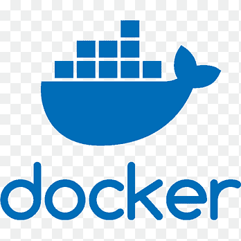
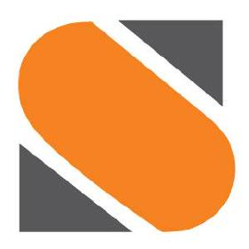

I'm Keshav.
Site Reliability Engineer
About Me
I am a Site Reliability Engineer focused on building scalable, resilient, and automation-first platforms. I enjoy solving reliability challenges across infrastructure, observability, and incident response to keep critical systems stable under real-world load.
My M.Tech work on auto-remediation with StackStorm strengthened my approach to event-driven operations, where detection, diagnosis, and recovery are tightly integrated into everyday engineering workflows.
Beyond my day-to-day role, I actively contribute to the community through volunteering with SRE Hyderabadi and PyConf Hyderabad, helping create spaces where engineers can learn, share, and grow together.

Docker
StackStormFeatured Work
MTech DissertationAuto-Remediation via StackStorm
Building event-driven automation loops that detect, diagnose, and resolve service outages autonomously.